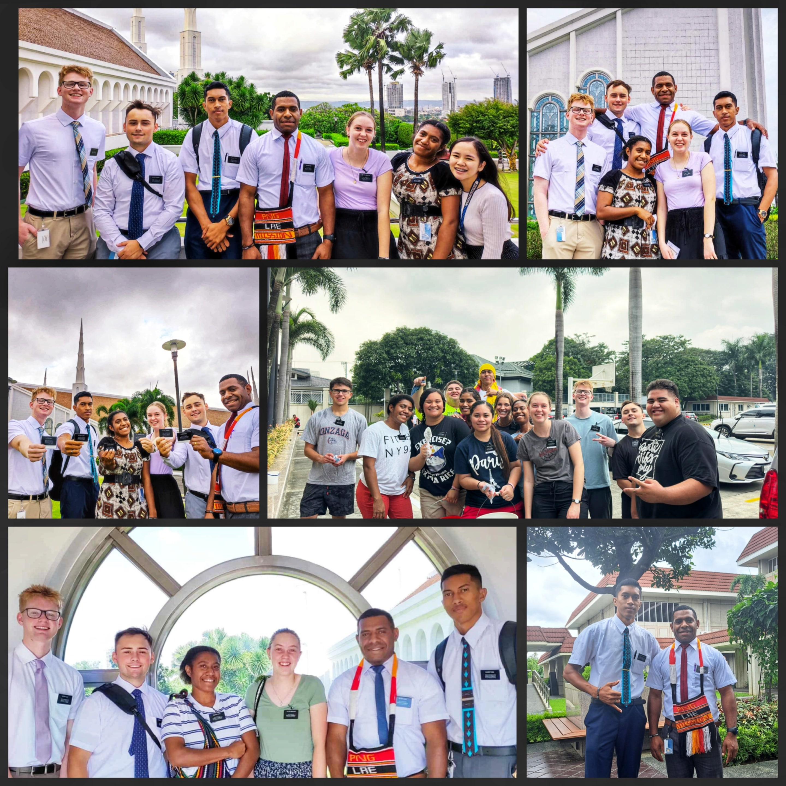

My Testimony
I know that Jesus Christ is the Son of God and that He lives. I have felt His love and guidance in my life, and I am grateful for His teachings and example. Through prayer, scripture study, and living according to His commandments, I have found peace and joy. I testify that He is our Savior and Redeemer, and I strive to follow Him each day.
In times of trial and difficulty, I have felt His presence and comfort. I know that He is always there to help us and that through Him, we can find strength and hope. I am thankful for the blessings of the gospel in my life and for the opportunity to share my testimony with others.
<
As I continue to grow in my faith and understanding of Jesus Christ, I am committed to living a life that reflects His teachings and love. I know that through Him, we can find true happiness and fulfillment. I am grateful for the gift of His Atonement and the hope it brings to all of us.
In conclusion, I testify of the reality of Jesus Christ and His role as our Savior. I am thankful for His love, guidance, and sacrifice, and I strive to follow Him in all that I do. May we all seek to strengthen our relationship with Him and share His message of hope and salvation with others.